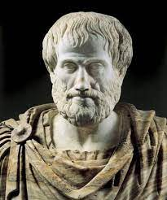
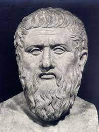
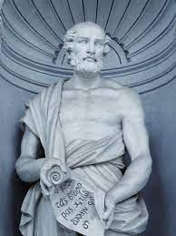
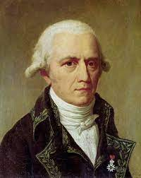
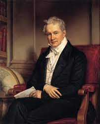
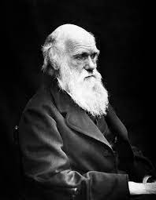
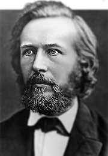
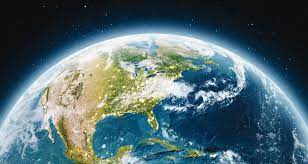

La ecología no es una ciencia que se descubrió hace poco, esta lleva milones de años, los cuales desde el año 347 a.c.se empezó con su estudio y así progresivamente hasta la actualidad. A continuación les mostraremos la línea del tiempo que ha pasado a lo largo de los años através del estudio de la ECOLOGÍA.

ARISTÓTELES 347 A.C.
Estudió un gran numero de especes diferentes (500 especies)"Es necesario tomar por separado cada especie y examinar su naturaleza propia".

PLATÓN 320 A.C.
Estudió el desarrollo de las especies y expúso la importancia de identificar y clasificar a las especies de acuerdo a sus caracteristicas.

TEOFRASTO 270 A.C.
Padre de la "BOTÁNICA". Describe por primera vez la estructura, función y distribución de las plantas.

JEAN-BAPTISTE LAMARCK 1793
Expúso la primera teoría de la evolución "El medio ambiente se haya en constante transformación, lo que conlleva a una evolución necesaria de los seres que lo habitan"

ALEXANDER VON HUMBOLDT 1804
Recorrió una gran parte de America Latina, recogiendo una gran gran cantidad de información acerca de su flora, fauna, geología, etc.

CHARLES DARWIN 1859
Propúso la teoría de la evolución biológica por selección natural. "Las especies cambian a lo largo del tiempo dando origen a nuevas especies"

ERNST HAECKEL 1866
Es conocido como el padre de la "ECOLOGÍA". Acuñó el nombre de dichas ciencias a partir de los vocablos griegos "oikos" y logóa (estudio del hogar).

CONSOLIDACIÓN DE LA ECOLOGÍA COMO CIENCIA 1960
La ecología se transforma en una ciencia de síntesis e integración, que comienza a escaparse de los ámbitos biológicos para establecer nexos con otras ciencias naturales, para así explicar las relaciones entre los organismos y su medio ambiente.

22 DE ABRIL
DIA INTERNACIONAL DE LA TIERRA
El dia 22 de abril de 1970 se declaró "EL DÍA DE LA TIERRA" esto con el fin de celebrar a nuestro planeta y promover preservación de los recursos naturales de nuestro planeta.